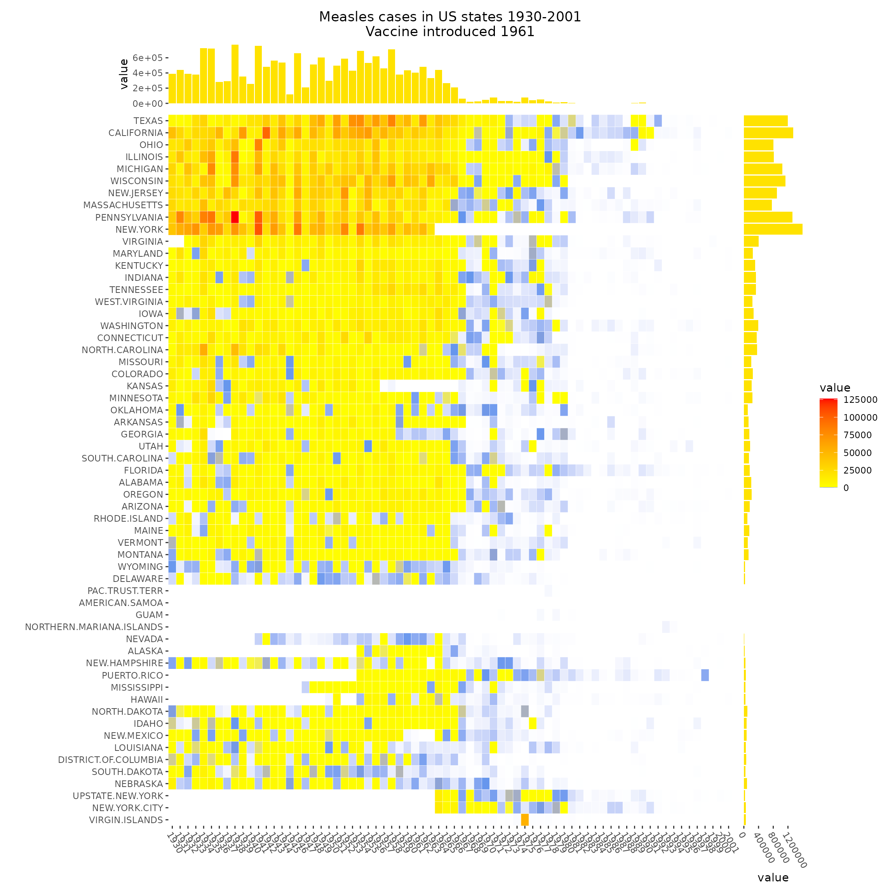

In this thread, we’ll use ggalign to draw all the
heatmap in https://jokergoo.github.io/ComplexHeatmap-reference/book/more-examples.html.
Add more information for gene expression matrix
expr <- read_example("gene_expression.rds")
mat <- as.matrix(expr[, grep("cell", colnames(expr))])
base_mean <- rowMeans(mat)
mat_scaled <- t(apply(mat, 1, scale))
type <- gsub("s\\d+_", "", colnames(mat))
stack_alignh(mat_scaled) +
stack_active(sizes = c(0.2, 1, 1)) +
# group stack rows into 5 groups
align_kmeans(centers = 5L) +
# add a block plot for each group in the stack
ggalign(size = unit(1, "cm"), data = NULL) +
geom_tile(aes(x = 1, fill = factor(.panel))) +
scale_fill_brewer(palette = "Dark2", name = "Kmeans group") +
scale_x_continuous(breaks = NULL, name = NULL) +
# add a heatmap plot in the stack
ggheatmap() -
plot_align(free_spaces = "l") +
scale_y_continuous(breaks = NULL) +
scale_fill_viridis_c(option = "magma") +
# add dendrogram for this heatmap
anno_top() +
align_dendro() +
# add a block for the heatmap column
ggalign(data = type, size = unit(1, "cm")) +
geom_tile(aes(y = 1, fill = factor(value))) +
scale_y_continuous(breaks = NULL, name = NULL) +
scale_fill_brewer(
palette = "Set1", name = "type",
guide = guide_legend(position = "top")
) +
# add another heatmap in the stack and set the heatmap body width
ggheatmap(base_mean, width = unit(2, "cm")) +
scale_y_continuous(breaks = NULL) +
scale_x_continuous(name = "base mean", breaks = FALSE) +
scale_fill_gradientn(colours = c("#2600D1FF", "white", "#EE3F3FFF")) +
# set the active context of the heatmap to the top
# and set the size of the top stack
anno_top(size = unit(4, "cm")) +
# add box plot in the heatmap top
ggalign() +
geom_boxplot(aes(y = value, fill = factor(.extra_panel))) +
scale_x_continuous(expand = expansion(), breaks = NULL) +
scale_fill_brewer(
palette = "Dark2", name = "base mean",
guide = guide_legend(position = "top")
) +
theme(axis.title.y = element_blank()) +
# we move into the stack layout
stack_active() +
# add a point plot
ggalign(data = expr$length, size = unit(2, "cm")) +
geom_point(aes(x = value)) +
labs(x = "length") +
theme(
panel.border = element_rect(fill = NA),
axis.text.x = element_text(angle = -60, hjust = 0)
) +
# add another heatmap and set the heatmap body width
ggheatmap(expr$type, width = unit(2, "cm")) +
scale_fill_brewer(palette = "Set3", name = "gene type") +
scale_x_continuous(breaks = NULL, name = "gene type") +
# add barplot in the top annotation, and remove the spaces in the y-axis
anno_top() -
plot_align(free_spaces = "lr") +
ggalign(limits = FALSE) +
geom_bar(
aes(.extra_panel, fill = factor(value)),
position = position_fill()
) +
scale_y_continuous(expand = expansion()) +
scale_fill_brewer(palette = "Set3", name = "gene type", guide = "none") -
plot_theme(plot.margin = margin()) &
theme(
plot.background = element_blank(), panel.background = element_blank(),
legend.background = element_blank()
)
#> → heatmap built with `geom_tile()`
#> → heatmap built with `geom_tile()`
#> → heatmap built with `geom_tile()`
The measles vaccine heatmap
mat <- read_example("measles.rds")
ggheatmap(mat, filling = FALSE) +
geom_tile(aes(fill = value), color = "white") +
scale_fill_gradientn(
colours = c("white", "cornflowerblue", "yellow", "red"),
values = scales::rescale(c(0, 800, 1000, 127000), c(0, 1))
) +
theme(axis.text.x = element_text(angle = -60, hjust = 0)) +
anno_right() +
align_dendro(plot_dendrogram = FALSE) +
anno_top(size = unit(2, "cm")) +
ggalign(data = rowSums) +
geom_bar(aes(y = value), fill = "#FFE200", stat = "identity") +
scale_y_continuous(expand = expansion()) +
ggtitle("Measles cases in US states 1930-2001\nVaccine introduced 1961") +
theme(plot.title = element_text(hjust = 0.5)) +
anno_right(size = unit(2, "cm")) +
ggalign(data = rowSums) +
geom_bar(aes(x = value),
fill = "#FFE200", stat = "identity",
orientation = "y"
) +
scale_x_continuous(expand = expansion()) +
theme(axis.text.x = element_text(angle = -60, hjust = 0))
Session information
sessionInfo()
#> R version 4.4.2 (2024-10-31)
#> Platform: x86_64-pc-linux-gnu
#> Running under: Ubuntu 22.04.5 LTS
#>
#> Matrix products: default
#> BLAS: /usr/lib/x86_64-linux-gnu/openblas-pthread/libblas.so.3
#> LAPACK: /usr/lib/x86_64-linux-gnu/openblas-pthread/libopenblasp-r0.3.20.so; LAPACK version 3.10.0
#>
#> locale:
#> [1] LC_CTYPE=C.UTF-8 LC_NUMERIC=C LC_TIME=C.UTF-8
#> [4] LC_COLLATE=C.UTF-8 LC_MONETARY=C.UTF-8 LC_MESSAGES=C.UTF-8
#> [7] LC_PAPER=C.UTF-8 LC_NAME=C LC_ADDRESS=C
#> [10] LC_TELEPHONE=C LC_MEASUREMENT=C.UTF-8 LC_IDENTIFICATION=C
#>
#> time zone: UTC
#> tzcode source: system (glibc)
#>
#> attached base packages:
#> [1] stats graphics grDevices utils datasets methods base
#>
#> other attached packages:
#> [1] ggalign_0.0.5.9000 ggplot2_3.5.1
#>
#> loaded via a namespace (and not attached):
#> [1] gtable_0.3.6 jsonlite_1.8.9 dplyr_1.1.4 compiler_4.4.2
#> [5] tidyselect_1.2.1 jquerylib_0.1.4 systemfonts_1.1.0 scales_1.3.0
#> [9] textshaping_0.4.0 yaml_2.3.10 fastmap_1.2.0 R6_2.5.1
#> [13] labeling_0.4.3 generics_0.1.3 knitr_1.49 tibble_3.2.1
#> [17] desc_1.4.3 munsell_0.5.1 bslib_0.8.0 pillar_1.9.0
#> [21] RColorBrewer_1.1-3 rlang_1.1.4 utf8_1.2.4 cachem_1.1.0
#> [25] xfun_0.49 fs_1.6.5 sass_0.4.9 viridisLite_0.4.2
#> [29] cli_3.6.3 pkgdown_2.1.1 withr_3.0.2 magrittr_2.0.3
#> [33] digest_0.6.37 grid_4.4.2 lifecycle_1.0.4 vctrs_0.6.5
#> [37] evaluate_1.0.1 glue_1.8.0 farver_2.1.2 ragg_1.3.3
#> [41] fansi_1.0.6 colorspace_2.1-1 rmarkdown_2.29 tools_4.4.2
#> [45] pkgconfig_2.0.3 htmltools_0.5.8.1